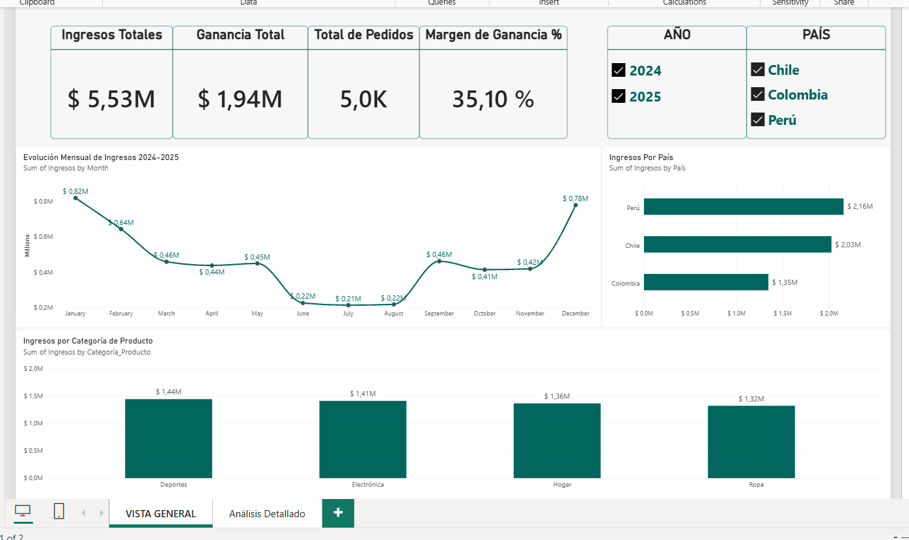
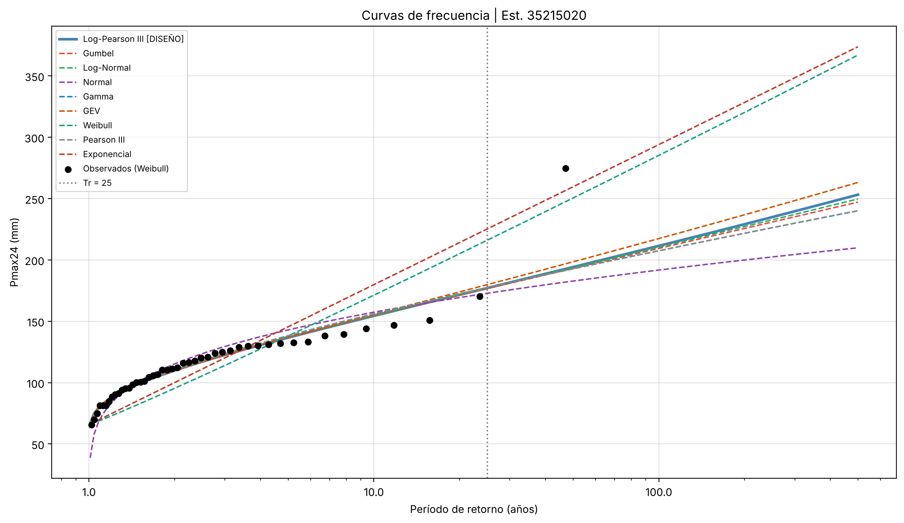

Proyectos destacados
Dashboard de desempeño comercial en Power BI — Andes Retail Group
Power BI · Excel · TripleTen · 2026

Contexto: dashboard de dos páginas (resumen ejecutivo y análisis detallado) sobre 5,000 pedidos 2024–2025 de Perú, Chile y Colombia (dataset ficticio del bootcamp).
Power BI
Storytelling con datos
SCQA
Hallazgos y resultados:
- Ingresos de $5.53M, ganancia de $1.94M y margen global de 35%, estable entre categorías
- Estacionalidad marcada: los ingresos mensuales de julio son ~74% menores que los del pico de enero
- El segmento Económico aporta solo 9% de los ingresos: oportunidad de activación
Evidencia: Archivo de Power BI disponible bajo solicitud.
Análisis de frecuencia hidrológica y curvas IDF
Python · SciPy · Matplotlib · Ingeniería hidráulica · 2026

Contexto: herramienta propia en Python que construye curvas Intensidad–Duración–Frecuencia (IDF) a partir de estaciones pluviométricas del IDEAM, para el diseño de infraestructura hidráulica en los Llanos Orientales. Desarrollada en 2026 con apoyo de herramientas de IA. El repositorio incluye el código y dos casos de ejemplo (Yopal y La Chaparrera).
Python
Estadística
Automatización
Hallazgos y resultados:
- Ajuste de 9 distribuciones con pruebas AIC, BIC, Kolmogorov-Smirnov y Anderson-Darling, e intervalos de confianza por bootstrap
- Seis métodos IDF comparados: Chen, Díaz-Granados/INVIAS, Sherman, Bernard, Bell y Kothyari-Garde
- Salida automática: Excel de 30 hojas, PDF de gráficas y memoria de cálculo en Word
- Estación Aeropuerto Yopal (46 años de registro): Log-Pearson III y precipitación máxima en 24 horas de 177 mm para un periodo de retorno de 25 años
Repositorio: Analisis-hidrologico-IDF
Experimento A/B en una landing page
Python · SciPy (prueba t, chi-cuadrado) · TripleTen · 2026
Contexto: evaluación estadística de un experimento A/B con ~40,000 usuarios para decidir qué versión de la página convierte más y genera más valor.
Python
Pruebas de hipótesis
A/B testing
Hallazgos y resultados:
- Conversión: 15.96% (B) frente a 12.57% (A), +3.39 puntos porcentuales (χ² = 93.4, p < 0.001)
- Gasto por usuario convertido: $68.75 (B) frente a $61.09 (A), +$7.66 (p < 0.001)
- La fuente de tráfico tiene un efecto pequeño (p = 0.034) y el tipo de usuario no es significativo (p = 0.47)
Repositorio: Experimento-AB-landing-page
NovaRetail+ — Factores de comportamiento, abandono e ingreso
Python · Pandas · SciPy · Correlaciones · V de Cramér · TripleTen · 2026
Contexto: análisis exploratorio para el equipo de Crecimiento y Retención de un e-commerce latinoamericano (15,000 clientes, dataset del bootcamp).
Python
Correlación
Retención
Hallazgos y resultados:
- El abandono (15.1%) no se explica con ninguna variable disponible
- La membresía premium es el único factor asociado a menor abandono y a mayor ingreso anual
- La publicidad dirigida se asocia con más visitas (r = 0.58), pero mucho menos con compras (r = 0.21)
Repositorio: NovaRetail-comportamiento-clientes
Embudo de conversión y cohortes de retención — E-commerce
SQL (CTEs, funciones de ventana) · Python · DuckDB · 2026
Contexto: consultas SQL para ubicar dónde se pierde tráfico en un embudo de e-commerce y medir la retención por cohortes. El proyecto se ejecuta de principio a fin con datos sintéticos generados en el repositorio (20,000 usuarios simulados), de modo que cualquiera puede probarlo con un solo comando.
SQL
Análisis de cohortes
Funnel
Resultados de la demostración (datos simulados):
- Embudo de cinco etapas con conversión entre etapas y conversión total de 9.39% de visita a compra
- Retención por cohorte mensual y recompra a 30, 60 y 90 días (24.0%, 32.0% y 33.4%)
- Resultados validados contra un cálculo independiente en pandas
Repositorio: Ecommerce-funnel-analysis
Movilidad urbana y desarrollo económico — Ciudades de LATAM
Python · Pandas · SciPy · TomTom Traffic Index · OCDE · TripleTen · 2026
Contexto: ¿se relaciona el desarrollo económico de una ciudad latinoamericana con su congestión? Se integraron dos fuentes heterogéneas (TomTom, ~1 millón de registros, y OCDE) para 15 ciudades en 2024.
Python
Pandas
Correlaciones
Hallazgos y resultados:
- El PIB per cápita no se asocia de forma significativa con la congestión (r = 0.28, p = 0.31)
- El tamaño de la ciudad sí: la población muestra la mayor asociación (r = 0.88, p < 0.001); Ciudad de México y São Paulo lideran la región
- Se corrigió un cruce que duplicaba cada ciudad y se documentó una posible anomalía en los datos de origen (PIB de Santiago 2024)
Repositorio: Movilidad-LATAM
Análisis estadístico de clientes — ConnectaTel
Python · Pandas · Seaborn · Estadística descriptiva · TripleTen · 2026
Contexto: perfil estadístico de los clientes de una empresa de telecomunicaciones en Latinoamérica (datos hasta 2024): calidad de datos, outliers, segmentación por edad y uso, y recomendaciones para retención y diseño de planes.
Python
Segmentación
Outliers
Hallazgos y resultados:
- Limpieza de valores centinela, fechas imposibles y valores faltantes
- Segmentación de clientes por edad y por nivel de uso
- Resumen ejecutivo con recomendaciones: planes premium para alto uso, retención de bajo uso y campañas de recuperación (win-back)
Repositorio: Analisis-estadistico-empresa-de-telecomunicaciones
Dashboards en Power BI y Tableau
Power BI · Tableau · TripleTen · 2026
Contexto: proyecto final de análisis de órdenes de Rappi Plus (Power BI: vista ejecutiva con 5 KPI y vista de detalle con navegación), estrategia comercial de Andes Capital Real Estate (Power BI: 3 páginas, incluido análisis de cohortes) y libros de Tableau sobre ingresos mensuales y acumulado del año (YtD) y producción de energía.
Power BI
Tableau
Cohortes
Contenido:
- Dashboards con vista ejecutiva, detalle y filtros interactivos
- Análisis de cohortes en Power BI
- Libros de Tableau con barras, líneas, KPI y tablas
Evidencia: Archivo de Power BI disponible bajo solicitud.